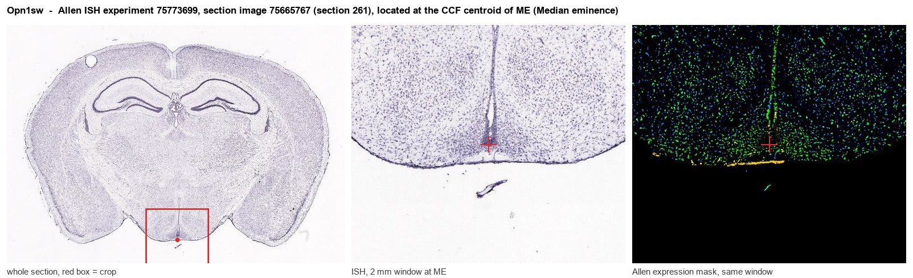
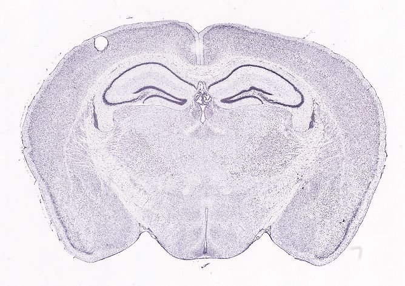
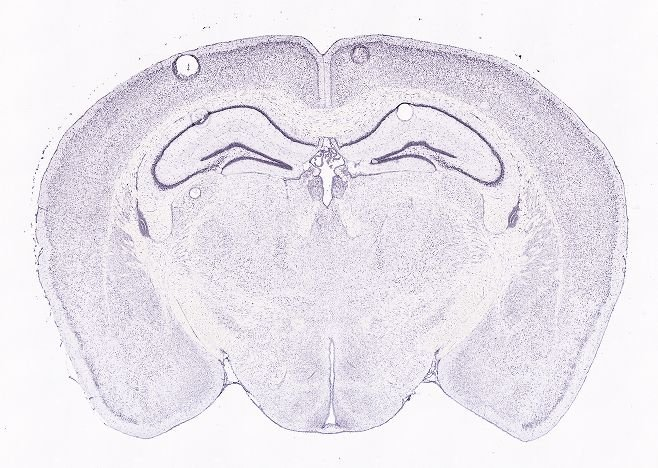
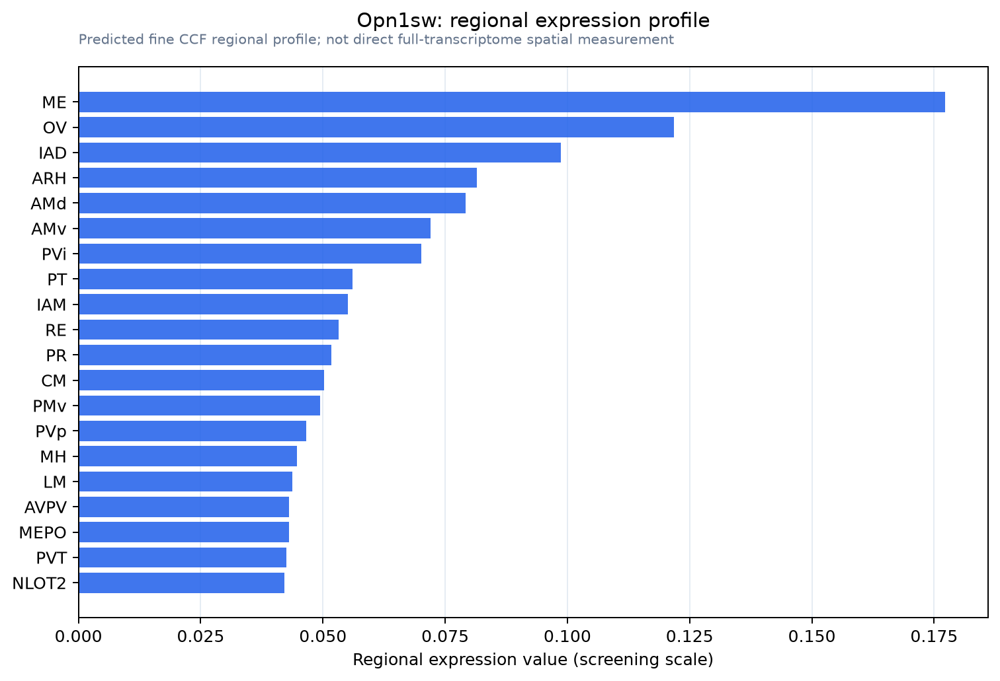

Opn1sw
Short-wave-sensitive opsin 1 (S opsin) (Blue cone photoreceptor pigment) (Blue-sensitive opsin) (BOP) (Short wavelength-sensitive cone opsin)
Spatial tier: STRICT_EXCLUSIVE · Class: GPCR · Top region: ME (Median eminence) · Positive regions: 9/554
Function in ME: evidence, prediction, innovation
- Gene function
- Opn1sw encodes S-opsin, the short-wavelength cone visual pigment: a 7-transmembrane opsin GPCR that binds 11-cis-retinal and, on photon capture, activates transducin and the PDE6-cGMP phototransduction cascade. In mouse it is expressed in cones along a ventral-to-dorsal gradient and gives UV/blue sensitivity (~360 nm).
- Region function
- The median eminence is the hypothalamic neurohaemal organ: beta-tanycytes and neurosecretory terminals abut fenestrated portal capillaries, release hypophysiotropic hormones into portal blood and gate blood-borne metabolic signals into the arcuate nucleus.
- Published in this region
- inferred No region-specific literature found; S-opsin work is confined to retinal cones (Daniele et al. 2011, Vision Res: Opn1sw-null mice become M-opsin monochromats; Ma et al. 2022 used Opn1mw/Opn1sw double nulls for blue-cone monochromacy). Closest hypothalamic finding: other non-visual opsins are functional there, with OPN5 preoptic neurons mediating violet-light suppression of thermogenesis (Zhang et al. 2020, Nature).
- Predicted function
- Prediction: Opn1sw signal in the median eminence most likely reflects low-level or ectopic transcription, since the basal hypothalamus of a pigmented mouse receives almost no photons. If protein is made, the plausible role is chromophore-independent constitutive G-protein signalling in tanycytes. Knockout should give no median eminence phenotype; any positive claim needs S-opsin protein plus light- or retinal-dependent signalling shown in tanycytes.
- Innovation
- ★★★★☆ 4/5 Completely unstudied here and easy to test with existing knockouts, but the prior probability of a genuine cone-opsin function in the median eminence is low.
- Tools
- Opn1sw knockout and Opn1mw/Opn1sw double-null mice; validated anti-S-opsin antibodies; no Opn1sw-Cre line for hypothalamus; tanycyte access via Rax-CreERT2 and ICV AAV.
- References
Direct evidence located at the region

Allen ISH experiment 75773699, section image 75665767 (section 261): the section that contains the CCF centroid of Median eminence according to the Allen image-to-atlas alignment (reference_to_image), with a 2 mm window around that point. Left: whole section, red box = window. Middle: ISH signal. Right: Allen's expression-mask view of the same window. open this image in the Allen viewer
Direct spatial evidence



Regional expression figure

Predicted WMB × fine-CCF profile; not direct full-transcriptome spatial measurement.
Spatial profile
Evidence and specificity
- Evidence status
- PREDICTED_FINE
- Direct sources
- None; predicted localization only
- Exclusive threshold
- 12 positive regions out of 554
- Spatial specificity
- 0.369
- Top-region fraction
- 0.117
- Filter status
- PASS
Interpretation limits
- Cell-type-to-region projection is imputed expression, not direct spatial measurement.
- Adult reference atlases do not establish stability across age, sex, strain, state, or disease.
- Transcript abundance does not guarantee protein abundance or genetic-tool performance.